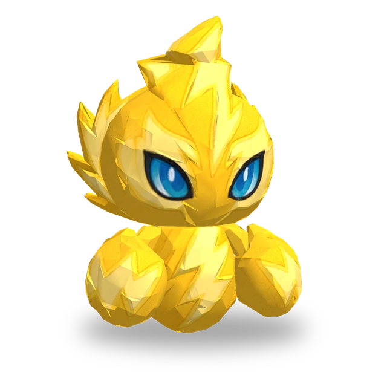

Активное
Коготь молнии
Наносит текущей цели в пределах 2 кл. магический урон в размере 600% силы атаки и накладывает Шок на 4 сек. Под действием Шока получаемый физический урон увеличивается на 40%.
 3D
3D
| Lv. | Здоровье | Сила атаки | Сила магии |
|---|---|---|---|
| 1 | 270 | 20 | 20 |
| 2 | 311 | 23 | 23 |
| 3 | 357 | 26 | 26 |
| 4 | 411 | 30 | 30 |
| 5 | 472 | 35 | 35 |
| 6 | 543 | 40 | 40 |
| 7 | 625 | 46 | 46 |
| 8 | 718 | 53 | 53 |
| 9 | 826 | 61 | 61 |
| 10 | 950 | 70 | 70 |
| 11 | 1092 | 81 | 81 |
Здоровье, сила атаки и сила магии растут на 15% с каждым уровнем (до Lv.11).
No.007
Наносит цели магический урон и накладывает Шок, увеличивающий получаемый физический урон, а в первую очередь атакует врага, нанёсшего больше всего урона за бой.
Активное
Наносит текущей цели в пределах 2 кл. магический урон в размере 600% силы атаки и накладывает Шок на 4 сек. Под действием Шока получаемый физический урон увеличивается на 40%.
Пассивное
Выбирая новую цель для обычных атак или применяя активное умение, в первую очередь выбирает врага, нанёсшего больше всего урона за бой.